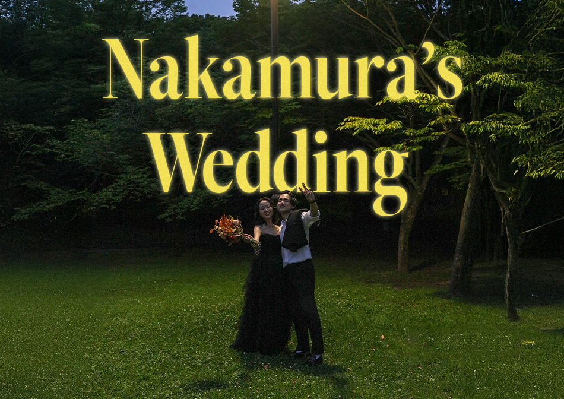

첫 번째 영상은 신랑과 신부 두 사람만이 등장합니다.
촬영은 신랑의 고향이자 두 사람이 신혼 생활을 시작하는 기후(氣候)현에서 진행하였습니다. 두 사람의 행복과 기대에 대한 감정을 담았습니다.
별도의 대사 없이 비주얼과 음악만으로 감정을 전달하는 MV식 표현 방식으로 구성했습니다.
색보정은 따뜻한 톤을 유지해 영상 전반의 무드를 유지했습니다.
두 번째 영상은 양가 어머니의 회상과 축하 인터뷰로 구성했습니다.
단순한 축하 영상이 아닌, 두 사람에 얽힌 추억부터 시작하여 새로운 가정을 이루어가는 것에 대한 응원을 담은 다큐멘터리식 구성을 사용했습니다.
"자식과의 시간 중 가장 행복한 순간은 언제입니까?"라는 질문을 통해 각 어머니들의 자연스러운 회상과 감정을 이끌어냈습니다.
어머니들의 말속에서 드러나는 감정을 중심으로, 질문과 컷 배열 조율하며 자연스럽게 흐름이 이어지도록 편집했습니다.
또한 영상 후반부에는 신랑과 신부가 등장해,
어떤 결혼생활을 하고 싶은지에 대한 포부와 하객들에게 전달하는 메시지로 결혼식과 자연스레 이어지게 구성했습니다.
인터뷰 대상자의 표정, 숨 멈춤, 웃음 등을 화면에 담아내는 연출을 통해 진정성이 전달되도록 구성했습니다.